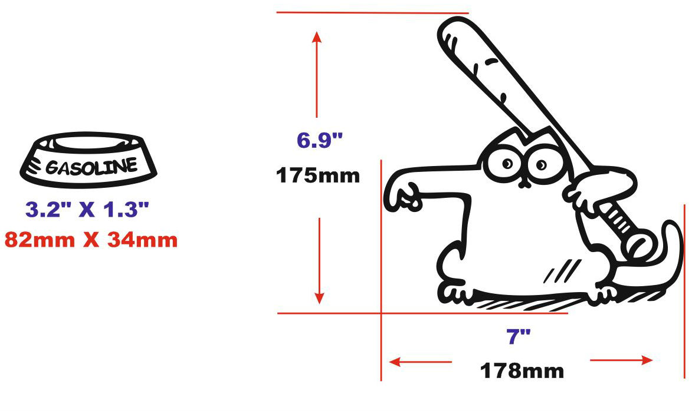
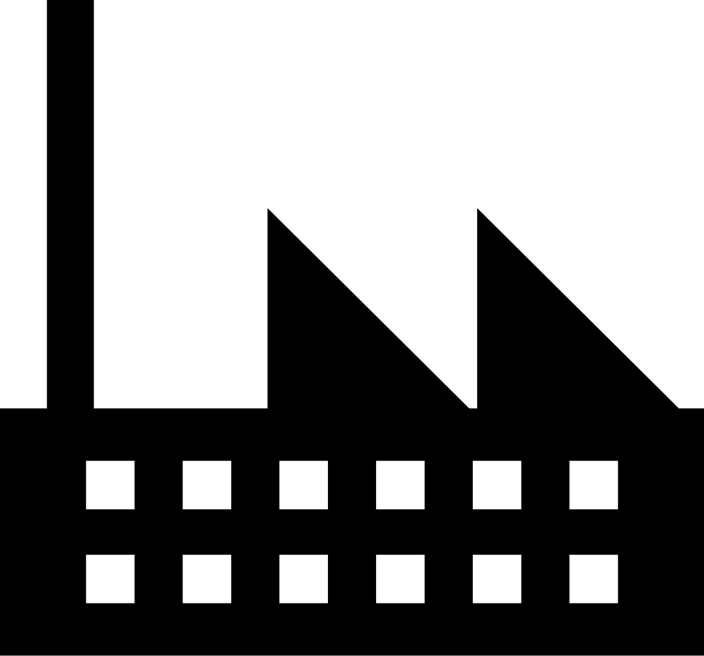

- Ruby — идентификатор поля экземпляра класса
- PHP — подавление вывода
- CoffeeScript — алиас для оператора this
- Java — объявление аннотации
- Python — объявление декоратора
- ES/TS — объявление декоратора
- target
- key
- descriptor
- function Decorator (target, name, descriptor )
- descriptor
- void
- декорирования
- аннотирования
- target - конструктор класса
- return - новый конструктор или ничего
- target - ссылка на prototype класса
- key - имя метода
- descriptor = Object.getOwnPropertyDescriptor
- return - ничего или дескриптор
- target - ссылка на prototype класса
- key - имя свойства
- return - ничего или дескриптор
- target - ссылка на prototype класса
- key - имя метода или undefined
- index - номер аргумента
- return - ничего
- @readonly
- @nonconfigurable
- @nonenumerable
- @lazyInitialize
- @autobind
- @deprecate
- @suppressWarnings
- @enumerable
- @override
- @debounce
- @throttle
- @time
- @decorate
- @mixin
ES7 Decor@tors
MoscowJS 28
Александр Майоров
Руководитель Frontend отдела
Angular2
import {Component} from 'angular2/core';
@Component({
selector: 'my-app',
template: 'My First Angular 2 App
'
})
export class AppComponent { }
Redux
import { connect } from 'react-redux';
@connect(mapStateToProps, mapDispatchToProps)
export default class MyApp extends React.Component {}

@
В языках программирования:
Декоратор?
ES7 Decor@tor
Принимает
Может возвращать
@ Используется
для
Можно декорировать
| Классы | @decorate class A {} |
| Методы | class A { @decorate foo(){} } |
| Свойства | class A { @decorate foo = 1; } |
| Аргументы* | class A { foo(@decorate a){} } |
CLASS
Декоратор класса
@classDecorator class A { }
function classDecorator(target) {}
Пример декорирования класса
@Component
class MyComponent {
template = 'Hello, Moscow!
';
}
let mc = new MyComponent;
let html = mc.render();
function Component(target) {
target.prototype.render = function() {
return this.template;
}
}
METHOD
Декоратор метода
class A {
@methodDecorator foo(){ ... }
}
function decorator(target, key, descriptor) {
return dcr;
}
Примеры
декораторов
@Override
class BaseComponent {
@override
render(){}
}
let MyComponent = new BaseComponent;
MyComponent.render(); // Throw error
@Deprecated
class BaseComponent {
@deprecated
oldMethod(){ /.../ }
}
let component = new BaseComponent;
component.oldMethod(); // Warning: deprecated ...
@Logger
@log
class Component {
@log someMethod(){ /.../ }
@log doAnything(){ /.../ }
}
@memoize
class Component {
@memoize
function getUserData() { ... }
}
required
function foo(arg1) {
if (arguments.length < 1 || arg1 === undefined)
throw new Error('Missing parameters');
return arg1 + 2;
}
function required(i) {
throw new Error(`Missing ${i} parameter`)
}
function foo(arg1 = required(1)) {
return arg1 + 2;
}
@required
@required ('arg1')
function foo( arg1 ) {
return arg1 + 2;
}
PROPERTY
Декоратор свойства
function (target, key, descriptor) {
return descriptor;
}
Декоратор свойства
|
Babel |
TypeScript |
Пример
Декоратор свойств
Readonly
class Cat {
@readonly name = 'Simon';
}
let myCat = new Cat;
myCat.name = 'Murzik'; // Throw error
function readonly(target, key, descriptor) {
descriptor.writable = false;
return descriptor;
}
PARAMETER
Декоратор параметра
Only in TypeScript
declare type ParameterDecorator =
(target: Object, key: string|symbol, index: number)
=> void;
Parameter Decorator
class Some {
constructor(@annotate x, @annotate y){}
foo(@annotate a, @annotate b){}
}
Decorator factory
Decorator factory
function Factory(...params){
// do anything with params
return function Decorator(target, key, descriptor){
// decorate or annotate target
// or descriptor
// return any
}
}
Фабричный декоратор
@Component({
selector: 'my-app'
template: 'My angular :)
'
})
class MyComponent {}
Идеи
для декораторов
RunTime Type System
AtScript like
class SomeClass {
@string foo = 'abc';
@float bar = 123.321;
@int baz = 123;
@type someDo(@cast `int` arg) {...} // eq: @cast('int') arg
@type `float` doAnything(@cast `float` a, @cast `int` b) {...}
@type({
'arguments': ['int', 'float'],
'return': 'string'
})
anyDo(a, b) { ... }
}
core-decorators.js
|
|
|
Что почитать
Будущее ?
Decorators hell!!!
@Component({ app: 'myapp' })
@View({ template: 'mytemplate' })
@log
@lorem @ipsum @dolor @sit @amet @consectetur
class SomeClass {
@readonly @deprecated
@memoize
@enumerable
@merge(function(){...})
@_if(User.logged)
@log action(@log name) {...}
}
Спасибо!
Alexander Mayorov @ Tutu.ru
@alexander.majorov
@frontman
@frontdevops
Презентация: http://moscowjs.majorov.su